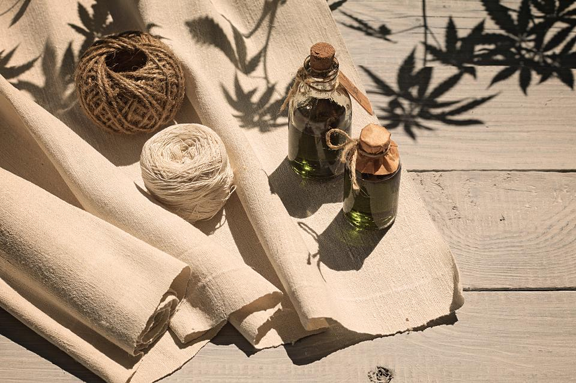
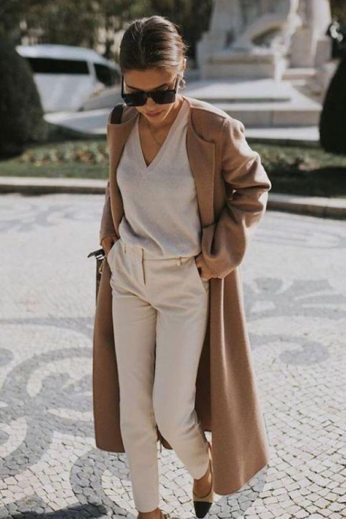
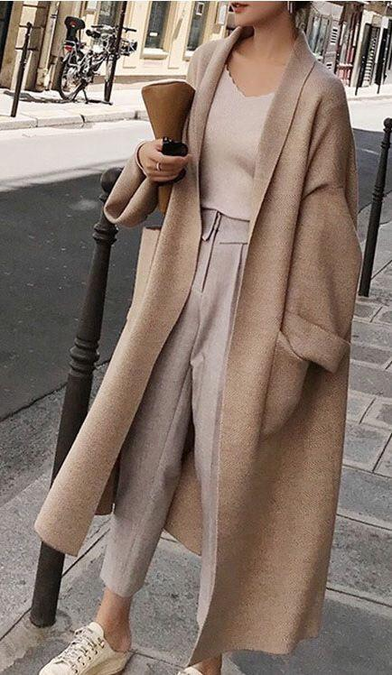
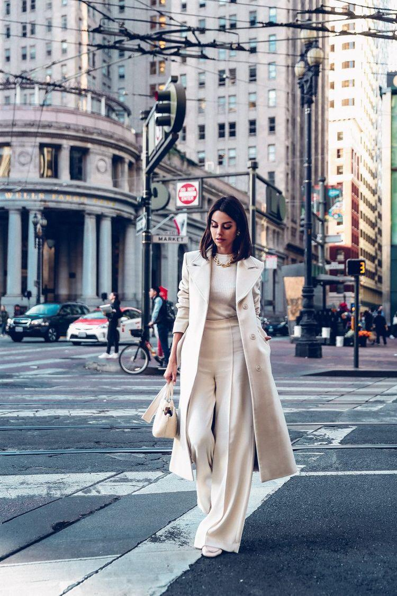

Mode Sofistiquée
A moda é importante porque ela desempenha um papel significativo na vida das pessoas. Além de ser uma necessidade básica, já que todos precisam de roupas para se proteger do clima e cobrir seus corpos, a moda também é uma forma de expressão e de arte. Ela reflete as tendências culturais e sociais de uma época, e pode ajudar a moldar a identidade de um indivíduo ou grupo. Além disso, a moda é uma indústria importante, que emprega milhões de pessoas em todo o mundo. Como tal, é importante que essa indústria seja sustentável, ética e justa, a fim de garantir um futuro melhor para todos.
Sobre NósBem-vindo à nossa empresa de moda consciente, a Mode Sofistiquée! Estamos entusiasmados em apresentar uma nova abordagem para o mundo da moda, onde a sustentabilidade e a responsabilidade ambiental estão no centro de tudo o que fazemos. Nós nos esforçamos para criar roupas ecológicas que sejam elegantes, modernas e livres de impactos negativos ao meio ambiente. |
A moda consciente incentiva a produção e consumo de roupas e acessórios sustentáveis, feitos a partir de materiais reciclados, orgânicos e biodegradáveis. Isso ajuda a reduzir o impacto ambiental negativo da indústria da moda, que é uma das mais poluentes do mundo.
A moda pode ser uma forma de expressar a personalidade e a identidade de uma pessoa. Ao escolher roupas e acessórios que reflitam seus valores e estilo pessoal, as pessoas podem aumentar sua autoestima e autoconfiança.
A moda consciente promove a adoção de práticas éticas na produção de roupas e acessórios, como a eliminação do trabalho escravo e infantil, e o pagamento justo aos trabalhadores. Isso ajuda a garantir que os trabalhadores da indústria da moda sejam tratados com dignidade e respeito, e recebam um salário justo.
A moda consciente incentiva o consumo de roupas de alta qualidade, feitas para durar por mais tempo. Isso significa que as pessoas precisam comprar menos roupas, o que reduz o desperdício e a produção excessiva.
Nossos ProdutosNossas roupas são cuidadosamente projetadas para serem duráveis, atemporais e versáteis, proporcionando um guarda-roupa sustentável e de qualidade. Nossas coleções incluem uma ampla variedade de estilos, desde peças casuais até vestidos elegantes, para atender às necessidades e preferências de todos os nossos clientes conscientes. Ao escolher nossas roupas ecológicas, você não está apenas se vestindo com estilo, mas também fazendo uma escolha positiva para o planeta. Estamos comprometidos em impulsionar a mudança na indústria da moda e inspirar outras empresas a adotarem práticas mais sustentáveis. |
 |
| "O segredo Para sempre andar estiloso, É sempre usar roupas neutras sem estampa, ... |  |
|  | ...Isso faz com que todas as roupas do seu guarda roupa combinem. |
| ...Já se você tem um guarda roupa muito estampado, isso faz com que muitas vezes você não não saiba como usar fazendo com que sua roupa não combine e fique brega." |  |
Frase da Designer de moda Larissa Grazielle
Que tal entrar em contato via email com a Mode Sofistiquée?
Clique aqui para nos enviar um e-mail!